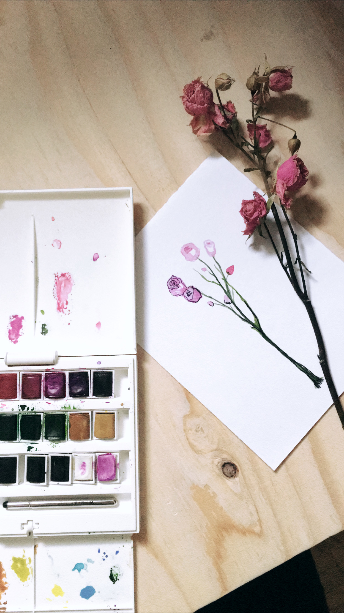
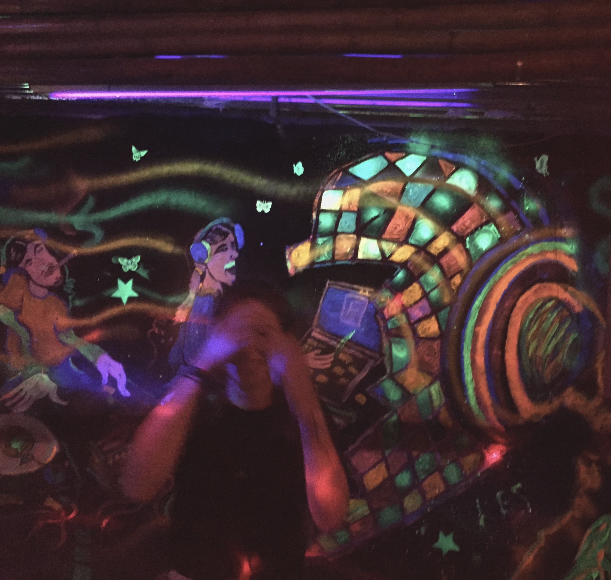

Creativity in Tech
Okay let’s talk about creativity and why it’s so undermined in our society, especially in the Science Technology Engineering Mathematics realm. Employers don’t list “must be creative” in their list of requirements- they list everything BUT creative. Today I want to argue why creativity is so important especially for a software developer and why an employer should be looking for creative individuals to join their team.
The word ‘creative’ comes with a lot of baggage. Traditionally, people label you as creative if you happen to be really good at drawing. But, there’s more to creativity.
Kids are good teacher when it comes to creativity; as kids all of us were wild and free, but somewhere along the way however we lost touch of our imagination and got lost in the ‘must’s and ‘do’s. If you don’t believe me just grab the nearest kid- and give them a block and ask them what would/can they make of that block. Now do the same thing with your roommate/partner/adult human and compare their answers.
Being creative is the ability to think outside the box, to see patterns, to perceive the world in new ways, to allow imagination to flourish, to be curious, to admire the details, and so much more.
An artist is someone who is good at tapping into their creative energy and letting the energy flow through them to create something extraordinary. There’s no right or wrong. There just is.
That’s the gap between hard-science fields and art fields- in science there’s a very solid line of right and wrong, the world is perceived through a black and white lense. This pattern of thinking is essential to the day to day work but it is also extremely limiting. It can be a dangerous way of thinking, it disables one to find creative solutions to a problem, to ponder ideas and their possible sequal.
As software developers, we are creators, we are artists, we are designers. Inherintely, creativity should and indeed is part of our job description. Given the tools at hand, there are endless possibilities for creations and ideas to come to life. So to all of you software developers, embrace your creativity, tap into it, let it flow through you, let it be part of your work.
Here are some ways you can tap into your creative energy:
- Observe - observation is a simple yet powerful tool, just look at something and study it for a while; when you’re looking, really look.
- Embrace boredom - actually welcome it. Boredom has negative connotation but research has shown boredom propels us into deeper thinking and creativity; allow your mind to have some funky daydreaming sessions and who knows, maybe you can manifest those ideas into reality.
- Play - this has to be one of the biggest downsides of ‘growing up’, it’s almost like we forget how to play and have fun. Think like a kid, get out of your head and do something, anything, as long as you’re having fun.
- Lastly, exercise - your body is an art piece within itself, but how you move your body, the way you dress, how you carry yourself, these are all forms of self expression which can be an indication of creativity. Any physical activity allows you to be more in touch with your body and have a deeper understanding of the art that is your body. Plus studies show that exercise increases the blood flow to the brain and let’s you get out of your head.